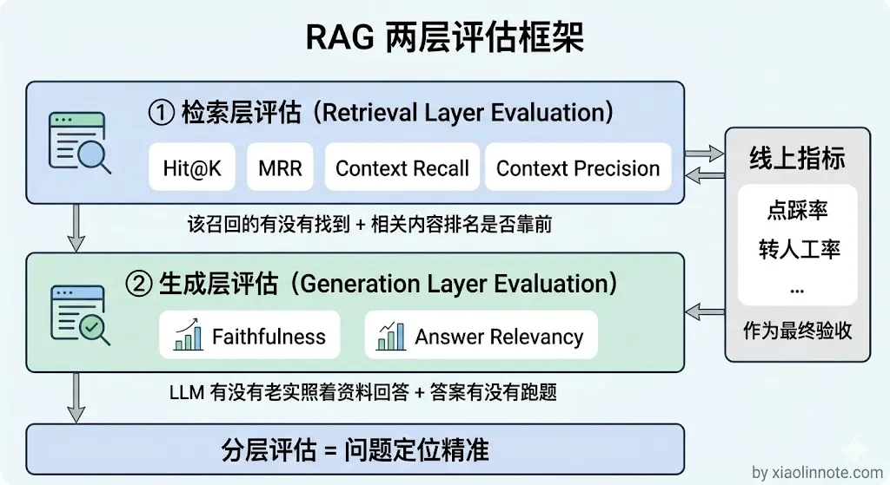
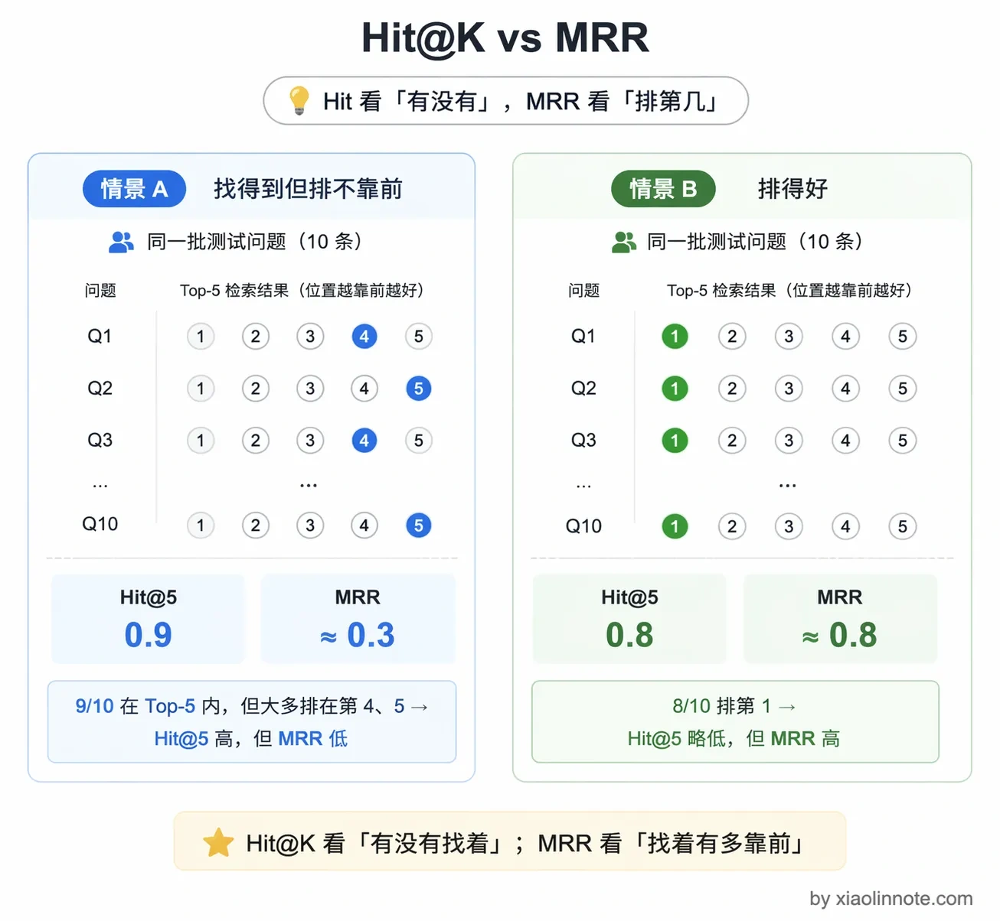
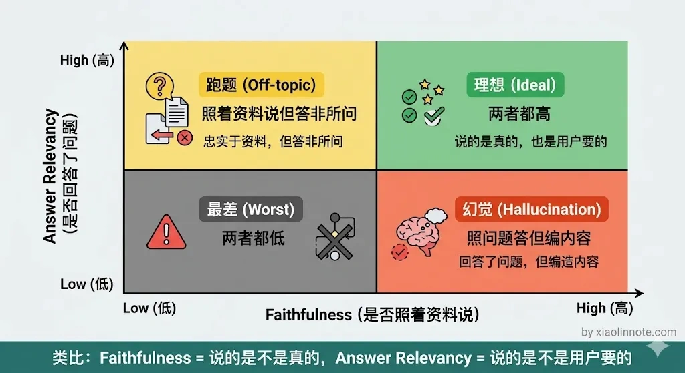
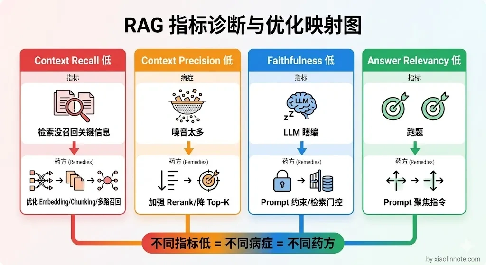
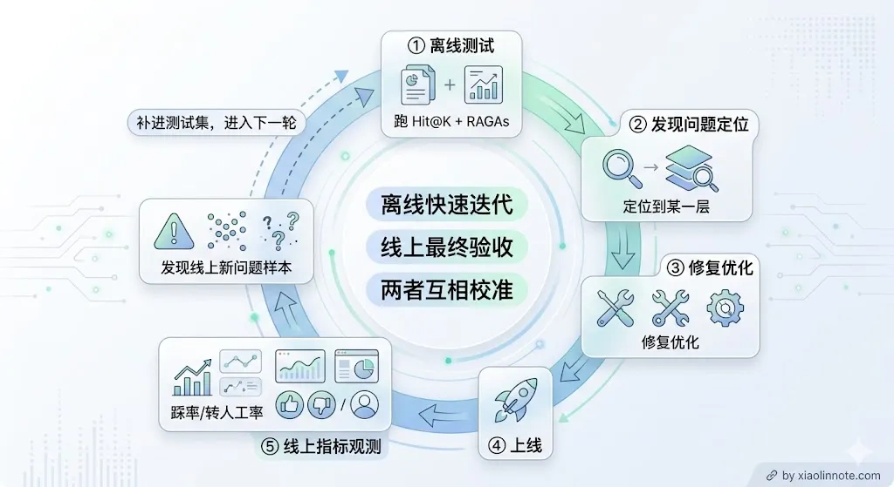

本篇目录
18. 怎么量化你的 RAG 效果？
👔面试官：你们线上跑了 RAG，那你怎么衡量它的效果好不好？
🙋♂️我：我主要看用户反馈，有人投诉就说明效果不好，没人投诉就还行。
👔面试官：靠用户投诉来评估？那你等到用户投诉的时候，已经有多少人被错误答案坑过了？你这叫亡羊补牢，不叫效果评估。再说，用户不投诉不代表效果好，可能人家直接就不用了。
🙋♂️我：那我可以抽查几十条问答，人工看看质量怎么样。
👔面试官：几十条样本能代表什么？而且人工抽查主观性太强，不同人标准不一样，你换个人来评估结论可能完全不同。我问的是你怎么系统性地、可量化地评估 RAG 的效果，能定位到具体哪个环节出了问题。
咱们还是来看一下怎么用指标体系来量化 RAG 效果。
💡 简要回答
我评估 RAG 效果是分两层来看的。
检索层看该召回的有没有召回到，我用 Hit@K 和 MRR 来衡量。生成层看答案对不对、有没有幻觉、和问题相不相关，我主要用 RAGAs 框架，里面的 Faithfulness、Answer Relevancy 和 Context Recall 这三个指标是最核心的。
我的建议是一定要在自己的业务数据上跑，不能只看通用排行榜，那个不能代表你的场景。
另外线上指标，就是用户的点踩率、追问率、转人工率这些，才是最终的衡量标准，离线指标只是辅助。
📝 详细解析
什么是 RAG 评估？
RAG 评估，就是用一套可量化的指标体系，持续测量 RAG 系统「回答得好不好」，并且能把「好不好」这个笼统的感受，拆解成具体是哪个环节出了问题。
你可能会问，为什么非得强调「持续」？
因为 RAG 系统不是搭完就一劳永逸的。知识库在更新，用户的提问方式在变化，Embedding 模型可能要换，Chunking 策略可能要调，每一次改动都可能让效果变好或者变坏。没有评估体系，你就是在盲飞，不知道自己的优化到底有没有用，甚至不知道改完之后系统是变好了还是变差了。
为什么需要 RAG 评估？
很多团队早期不做系统性评估，靠「人工抽查几条觉得还行」就上线了。
这种方式的问题很明显。
首先，靠感觉调优没有方向。改了 Chunking 策略、换了 Embedding 模型，系统效果有没有提升？抽查几条根本说明不了问题，样本太少，结论不可靠。
其次，出了问题不知道该查哪里。用户反馈「AI 回答错了」，你不知道是检索没召回到正确内容，还是召回了但 LLM 编造了额外信息，还是 Prompt 设计有问题。没有分层指标，排查就靠猜。
再者，优化后无法验证收益。你花了时间调优，但到底优了多少？没有数字说话，技术决策缺乏说服力，也无法判断下一步该在哪里继续投入。
RAG 评估的本质，是把「这套系统好不好用」这个主观感受，转化成一组可以追踪、可以对比、可以指导决策的客观数字。
为什么 RAG 评估很难
说完为什么需要，你可能会想：评估嘛，不就是对答案吗，有什么难的？事实上，RAG 评估比想象中难做得多。
普通分类任务评估很简单，有标准答案对比就行。RAG 的评估难在几个地方：答案是自然语言，没有唯一标准答案；出了问题不知道是检索层的锅还是生成层的锅；人工标注成本高，难以大规模持续做。
正确的做法是把评估拆成两层，分别衡量检索质量和生成质量，定位问题更精准。先看检索层。

第一层：检索层评估
不管 LLM 生成什么，先单独评估检索有没有把正确的 chunk 召回来。需要准备一批「问题 + 对应的正确 chunk ID」的测评数据（可以从历史问答里标注，也可以让领域专家整理）。
这一层主要有两个指标。
Hit@K 的直觉是：我把 Top-K 的检索结果摆在你面前，你要找的那个在里面吗？如果在，这次就算命中（Hit）。Hit@5 就是说，把前 5 个结果给你，能不能命中，最终统计命中率。
这个指标回答的是「找到没」的问题，不关心找到的是第几名。一般 Hit@5 低于 0.7 就说明检索层有问题，需要考虑换 Embedding 模型或者优化 Chunking 策略；高于 0.8 说明检索层 OK，如果答案还不好，问题在生成层。
MRR（Mean Reciprocal Rank，平均倒数排名）更进一步，关心的是「你要找的东西排在第几名」。计算公式也很直观，就是对每个问题算 1 / 排名，然后对所有问题求平均。所以第一名找到得 1 分，第二名找到得 0.5 分，第三名得 0.33 分，第五名得 0.2 分，排名越靠后得分越低。MRR 越高，说明正确内容排名越靠前，用户越早看到它。这个指标回答的是「多快找到的」。MRR 低于 0.5 通常说明 Rerank 效果不够好，正确内容召回了但没排到前面。
很多人容易混淆这两个指标，觉得差不多。简单来说：Hit@K 是「找到没」，MRR 是「多快找到的」。Hit@5 等于 0.9，说明 90% 的问题都能在前 5 个结果里找到相关内容；但 MRR 只有 0.3，说明相关内容虽然找到了，但排得很靠后，可能第 4、第 5 才出现。配合起来用能精确定位检索层的问题出在哪一步。

第二层：生成层评估（RAGAs 框架）
检索层评估回答了「找没找到」的问题，但找到之后 LLM 有没有好好利用这些内容？这就需要生成层评估。RAGAs（Retrieval Augmented Generation Assessment）是目前使用很广泛的 RAG 端到端评估框架，它的核心思路叫做「LLM-as-a-Judge」，意思是用 LLM 来当裁判，自动给答案打分，不需要人工标注每一条，大幅降低评估成本。
它有四个核心指标，分别是 Faithfulness、Answer Relevancy、Context Recall 和 Context Precision，每个都有直观的理解方式，下面挨个讲。
Faithfulness（忠实度）：答案里说的每件事，在检索到的 chunk 里有没有出处？这个指标衡量的是幻觉程度。你可以把它理解为「LLM 裁判」在逐句问：「这句话你从哪条资料里找到的依据？」没有依据的句子越多，分越低。目标值是 > 0.8。
Answer Relevancy（答案相关性）：答案有没有回答用户问的那个问题？注意这个指标和 Faithfulness 是两回事，很多人会把它们搞混。Faithfulness 是问「说的是不是真的」，Answer Relevancy 是问「说的是不是用户想要的」。一个答案可以字字有据、但完全跑题，Faithfulness 高、Answer Relevancy 低。
打个比方，你问「北京天气怎么样」，AI 回答了一篇关于北京历史的资料，内容全是对的，但和天气没有半毛钱关系，这就是 Faithfulness 高、Answer Relevancy 低。目标值是 > 0.8。

Context Recall（上下文召回率）：要回答这个问题，所需要的信息有多少比例在检索结果里覆盖到了？这个指标需要有「标准答案」作为参照，衡量的是检索层有没有「漏掉该找到的内容」。目标值是 > 0.7。
Context Precision（上下文精确率）：这个指标和 Context Recall 配对出现，衡量的是检索结果里「有用的内容」排名是否靠前。也就是说，如果你召回了 10 个 chunk，相关的那几个有没有被排在前面，而不是混在无关内容的后面。它同样需要 ground_truth 作为参照计算。Context Recall 关注「该找的有没有找全」，Context Precision 关注「找到的里面相关的是不是排在前面」，两个配合能完整刻画检索质量。
需要注意的是，RAGAs 本质上是「LLM-as-a-Judge」，每次评估都要调用 LLM 来打分。如果测试集有几千条，全量跑一遍的 token 消耗和时间成本相当可观。工程上通常有两种缓解方式：一是对核心测试集抽样评估，只跑最有代表性的 200～500 条；二是把评判者模型从 GPT-4o 降级到 GPT-4o-mini，成本降低 10 倍，精度损失在可接受范围内。
通过指标定位问题
有了这些指标，怎么用它们来定位问题？不同指标低说明不同的问题，指导优化方向。
Context Recall 低，你可以把它理解为「检索结果里缺少了答好这道题必要的信息」，说明检索层没召回到正确内容，优化方向是换更强的 Embedding 模型、调整 Chunking 策略、或者加多路召回来补充覆盖面。
Context Precision 低，说明检索召回了太多噪音，相关内容是找到了，但不相关的内容也混进来了，把 LLM 的注意力稀释掉了，优化方向是加强 Rerank 模型、调低最终送给 LLM 的 chunk 数量。
Faithfulness 低，说明 LLM 在编造，幻觉问题多，你回答里说的东西在参考资料里找不到依据，优化方向是加强 Prompt 约束、引入引用核查、或者做检索质量门控，防止低质量上下文进入生成阶段。
Answer Relevancy 低，说明答案跑题了，没有聚焦在用户问的问题上，通常是 Prompt 的指令不够明确，告诉 LLM「请严格回答问题本身，不要展开无关内容」往往就能改善。

线上指标：最终衡量标准
上面说的都是离线指标，但离线指标再好，最终还是要看线上用户的反应。毕竟离线跑得再漂亮，用户不满意也是白搭。
几个实用的线上指标，每一个都能反映 RAG 系统的某个方面。
踩率（thumbs_down_rate）是最直接的信号，用户主动点踩，说明这次回答让他不满意，是最真实的负反馈。
追问率（followup_rate）反映的是「答非所问」的程度，用户紧接着说「你没回答我的问题」或者追问同一个问题，通常意味着上一次回答没用。
转人工率（escalation_rate）衡量的是「RAG 放弃回答」的频率，这个比例太高说明知识库覆盖不足；但如果这个比例因为加了质量门控而上升，不一定是坏事，宁可转人工也不要给用户错误答案。
空回答率（answer_empty_rate）就是系统主动说「我不知道」的比例，过高说明知识库亟需扩充。
会话解决率（session_resolution_rate）是最综合的指标，衡量「一次对话能不能解决用户的问题」，是最贴近用户体验的衡量维度。
离线评估（Hit@K + RAGAs）用来快速迭代和定位问题，线上指标（踩率、转人工率）是最终验收标准。两者结合，形成「离线测评 -> 上线 -> 线上观测 -> 发现问题 -> 离线复现 -> 修复 -> 再上线」的完整评估闭环。
这里还要提醒一点：离线指标好不代表线上一定好，反过来也一样。常见的情况是离线测试集不能完整代表真实用户分布，或者离线指标优化过头反而损害了线上体验（比如为了 Faithfulness 把 Prompt 收得太死，结果模型回答过于保守、用户觉得不好用）。所以两者要定期交叉对照，发现偏差时往往是测试集需要更新或者指标权重需要调整。

把几个核心指标和它们的含义整理成表，方便对照排查：
| 指标 | 属于哪层 | 衡量什么 | 低了说明什么 |
|---|---|---|---|
| Hit@K | 检索层 | 正确 chunk 是否被召回 | Embedding 或 Chunking 有问题 |
| MRR | 检索层 | 正确 chunk 的排名是否靠前 | Rerank 效果差 |
| Context Recall | 生成层输入 | 检索内容覆盖了多少正确信息 | 多路召回不足 |
| Context Precision | 生成层输入 | 检索内容里噪音多不多 | Rerank 没过滤掉无关内容 |
| Faithfulness | 生成层 | 答案有没有幻觉 | Prompt 约束不足或检索质量差 |
| Answer Relevancy | 生成层 | 答案和问题相不相关 | Prompt 写法问题 |
| 踩率 / 转人工率 | 线上 | 用户实际满意度 | 整体系统效果，综合反映 |
🎯 面试总结
回到开头的问题，RAG 效果评估不能靠「用户投诉」或「人工抽查」这种事后手段，而是要建立一套分层的量化指标体系。
检索层用 Hit@K 和 MRR 衡量召回质量，生成层用 RAGAs 框架的 Faithfulness、Answer Relevancy、Context Recall 来衡量答案质量，线上再用点踩率、转人工率等业务指标做最终验收。
通过不同指标的组合，可以精确定位问题是出在检索层还是生成层，让优化有方向、有数据支撑，而不是凭感觉瞎调。
对了，大模型面试题会在「公众号@小林面试笔记题」持续更新，林友们赶紧关注起来，别错过最新干货哦！